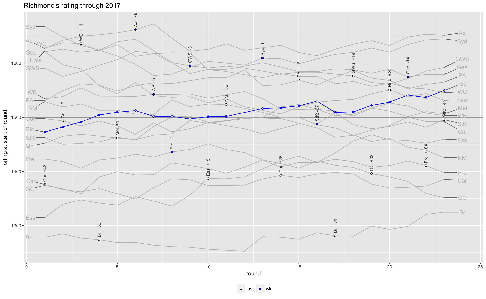
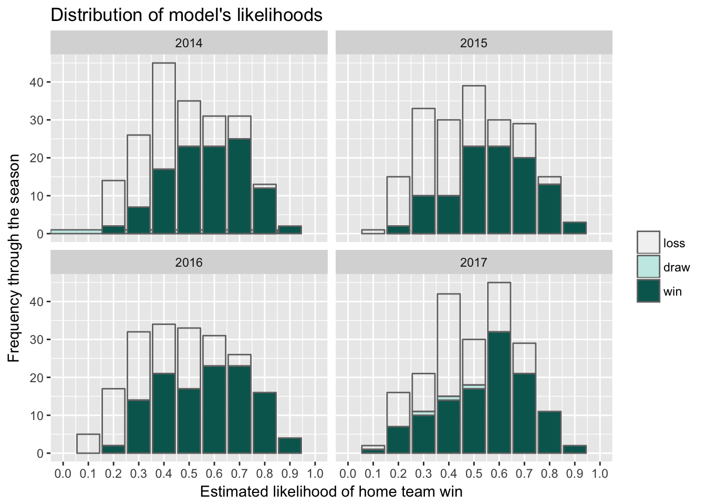

Introduction
Just like many other high-profile sports with an extended round-robin series, complementary competions have spun off the AFL season for amateurs followers. These tipping competions are particularly prevalent in work environments and social groups and are quite distinct from betting competions. The most frequent format, by far, for tipping competions features tippers submitting a tip for each game of the round, with the scores tallied at the end of the round.
Can data science find the “silver bullet” to tip AFL winners? Many punters would love to know. This blog reports on some analysis of AFL results since 2013 and determines if statistical models do actually offer the “silver bullet”.
Even though I haven’t had time to tune the model, the results are surprisingly positive.
Along the way, I’ve found answers to questions burning at the back of my mind for years, just waiting for an opportunity to get my hands on the data and do the analysis. This is what I’ve found…
AFL Tipping for Beginners
Here’s a quick introduction to AFL tipping for people who follow Aussie Rules Football less than me.
The AFL competition consists of 18 teams across Australia who each play 22 games over 23 rounds in a season that runs from mid-March to August. In recent seasons, most teams have enjoyed one bye around mid-season. The top 8 teams after round 23 then compete in the “Finals”, with a Grand Final played at the end of September or start of October.
Basic statistics about AFL Games
The most fundamental statistic in an AFL game is each team’s score at the end of a game and the margin betwen the winning and losing team, and the most frequent margin in most recent seasons has been 12 to 24 points. In the 2017 season, about 24% of games had a margin in this range, with about 22% of games decided by less than 12 points (2 goals).
Season 2017 was a better season for the liklihood of close results, with about half of the games decided by 23 points or less and about 87% of games decided by less than 60 points (10 goals).

Other statistics captured but only partly used in this analysis with potential for later include:
- The relative scores of the two teams rather than the absolute scores.
- Scores of 60 points to 50, a margin of 10, may be just as significant as 120 points to 100, even though the margin is half.
- Scores at 3/4 time of each game.
- Scoring in the last quarter is sometimes less an indication of the strength of the teams when the result of the game is beyond doubt and the intensity drops off (i.e. “junk time”).
- Scoring in the last quarter is sometimes less an indication of the strength of the teams when the result of the game is beyond doubt and the intensity drops off (i.e. “junk time”).
- The break down of the scores into goals and behinds.
- Teams score by either kicking a goal, 6 points, between the middle posts or a “behind”, 1 point, when a kick for goal goes either side of the middle posts or the ball is touched before crossing the goal line.
- Typically, around 54% of scoring shots are goals, though this can easily range from 40% to 65% with more extreme variances occassionally occurring.
- There is a clear association betwen kicking accuracy and winning, though causality is unclear. Inaccuracy can be due to bad luck or poor weather, poor kicking skills or strong defensive pressure by an opponent, which leads to rushing kicks for goal or kicking for goal from a more difficult positions on the field.
- Teams score by either kicking a goal, 6 points, between the middle posts or a “behind”, 1 point, when a kick for goal goes either side of the middle posts or the ball is touched before crossing the goal line.
- The team playing at home and the distance their opponent had to travel.
- The number of days since each team’s previous match, which is usually between 6 and 8 days.
The Tipping Model
The major goal of this analysis was a model to tip AFL results and to compare it against various models.
The tipping model works by building a rating score for each team, which is updated after each round based on how the team performed in game against expectations.
For example, in round 1 of 2017, Sydney played Port Adelaide. Before the game, the model calculated Sydney’s rating as 1667 (based on results in 2016), and Port Adelaide’s rating as 1530. Based on these ratings, the model predicted that Sydney would win by just under 17 points and estimated its likelihood of winning at 0.69.
If Sydney had won this game by 17 points or more, its rating score going into round 2 would increase and Port Adelaide’s rating would decrease. Alternatively, if Sydney had won the game by less than expected (17 points), its rating would have decreased even though it won. The key aspect of the model is that a team’s rating move up or down after each round based on whether or not the team exceeds expectations, which depends on the rating of their opponent.
As it happened, Port Adelaide won the match by 28 points, so the model updated the ratings of Sydney and Port Adelaide to 1648 and 1549, an adjustment of 19 points up or down for both teams. If Port Adelaide had won by even more, the adjustment would be even more.
The tipping model is a variation on the commonly used Elo rating system, variations of which are used by FIFA for their world rankings and the popular Nate Silver’s FiveThirtyEight. My model was adapted from these sites and in particular from The Arc Footy, graphed site. As The Arc suggests, Elo is a solid and relatively simple general purpose model that produces good estimates of margins and likelihood of winning, though it is less accurate than more advanced algorithms.
Ratings Ladder at the end of 2017 Home and Away Season
This chart shows the ratings at the end of the 2017 Home and Away Season, i.e. before the finals. AFL fans may be surprised to see that Richmond is only fourth on this ladder, but it is worth remembering that Richmond were only 3rd on the official AFL ladder with a modest percentage of 118% (flattered by 2 convincing wins in the last 2 rounds). In summary, Richmond won almost all of the games it was expected to but had fewer strong wins. It may also surprise to see Sydney second on the rankings when they finished 6th on the AFL ladder. However, Sydney started the sesaon quite slowly and finished very strongly with a percentage of 127%.

My Shiny Page has an interactive view of the ratings for each team in each season since 2013.
How Good is the Model?
Surprisingly good, is the short answer, given that I am yet to optimise the parameters or experiment with more sophisticated algorithms.
Comparing with Betting Agencies For this analysis, I made a number of comparisons with the odds and line margins offered by betting agencies using data downloaded from Australia Sports Betting.
Results
Out of the 4 seasons from 2014 to 2017, the model exceeded the betting agencies in 2014 and almost tied in 2017.
Predicting the margin
In terms of predicting the game margins, the model and betting agencies are remarkably close. In most season’s, the betting agencies’ margin estimates are slightly better though the model peformed better in the 2017 season. (Refer to the end of this blog for how to read box plots.)
Game by Game Review
This comprehensive plot shows all 198 games in the 2017 season.
Each game is represented as a box and is colour coded to show if the model predicted correctly, whereas the box’s margin indicates if the betting agencies tipped the game correctly.
Inside each box are 3 bars, representing the final margin in favour of the team, the model’s predicted margin and the betting agencies’ predicted margin.
This chart shows that there are very few sequences of incorrect tips by the model. Sydney was incorrectly tipped for rounds 1 to 6 which was due to their surprisingly slow start given their momentum at the end of the 2016 season. The model also incorrectly tipped the Collingwood games from rounds 2 to 7, which was matched by the betting agencie’s incorrect tips.
Performance of Estimated Likelihood
These plots show that the distribution of estimated likelihoods (probabilities) is approximately bell shaped, which is to be expected. Fortunately, the games with a higher estimated likelihood seem to associate with more wins, which is to be expected.

This plot shows the prevalence of home teams winning, based on the estimated likelihood of the home team winning. For instance, there are 10 games out of 198 in 2017 where the estimated likelihood of the home team winning was around 0.20, meaning that we would expect the home team to win 2 of those 10 games (20%). I actual fact, 6 of those 10 home teams with 0.2 likelihood of winning actually won (60%).
The diagonal line represents where we expect the points to fall.
 There are a few interesting features in this chart:
There are a few interesting features in this chart:
- There are no likelihoods less than 0.075 and none greater than 0.875, suggesting that the model may struggle with outliers.
- Out of the 16 (rounded) likelihoods between 0 and 1, 4 are clearly below the line, 1 (0.70) is on the line and 11 of the 16 are above the line.
- The probability of getting 11 or more above expectations, assuming a 50% chance, is 10.5%.
- This suggests that there is a bias to underestimating the home team’s likelihood, which is plausible as the model is yet to factor in home-ground advantage.
- The probability of getting 11 or more above expectations, assuming a 50% chance, is 10.5%.
- That said, the 3 likelihood ranges clearly below the 50-50 line are 0.35 to 0.45.
- If the model “corrected” for these likelihoods, then these tips would swing from correctly forecasting a loss to incorrectly forecasting a win.
Likelihood Performance for 4 Seasons
A review of the likelihoods over the 4 seasons suggests that 2017 with it’s tendency to understate the likelihood may be an anomoly. 2016 is similar though 2015 appears to overestimate likelihoods and 2014 appears more like what we expect.
Final word on the model
Winning a tipping competition will still require few ounces of luck, particularly in larger competitions. The winner will only win by taking risks.
My strategy for the new season will be to adopt the model’s recommendations for the first half of the season. For the second half, I’ll start to take risks based how I’m placed against the leaders. For instance, I may start tipping teams even if the models estimated likelihood is only 0.45 or even 0.4. To make up the lead, I would need these longer-shots to win and for the leader to choose the favourite.
This is just the beginning
Optimising the parameters
When I get time, I’ll go back to the Elo model parameters and tweak them to optimise my score.
Introducing new parameters to the model
Again, when I get time, I will re-run the Elo model with alternative parameters. In particular, I will try different statistics, such as the score ratio rather than the score difference, to see if they offer better likelihood estimates in some circumstances. I also intend to test for the significance of home team advantage and days’ break since the previous game.
Using more advanced algorithms
Over time, I intend to investigate more sophisticated algorithms. In particular, I will develop a logistic regression model.
What I learnt in this analysis
Scraping data from a website
This was the first R application I’ve built that routinely scrapes data from a website (the AFL Tables).
Moderately complex data wrangling
The match results data was in an extremely untidy format and wrangling the data into a tidy structure was a signficant learning curve.
More sophisticated plotting
There are features of some of these charts that I’m using for my first time. Since I started this analysis, there have been numerous times when I’ve had an idea from nowhere that has forced me to learn new functionality. I hope that you, the reader, have found these charts somewhat intuitive, interesting and enlightening.
If only I could get more data
One irritation with the AFL competition is the difficulty in sourcing useful data to feed the amatear analyst. As an example, I had to resort to scraping match results from an unoffical website, AFL Tables, even though many high profile professional sports make the data freely available to download.
The league, most clubs and the media subscribe to Champion Data and some of the data is available in untidy format in some newspapers, though the data is difficult to scrape from websites and, in any case, is subject to copyright.
One day, I would love to analyse data on inside-50s, tackles, effective disposals, contested ball, disposal efficiency and even scoring shot locations.
Footnotes
Code for this analysis is located here on GitHub.
Scoring Accuracy
Losing teams tend to see only about half of their scoring shots converted to goals, whereas winning teams tend to see 55% or more of their scoring shots converted as goals.

There definitely is an association between accuracy and winning for Melbourne, which is expected.
How is the distribution of relative accuracy?
q4.acc.df() %>%
group_by(tm, tm.res, seas) %>%
mutate(games = n()) %>%
ungroup() %>%
filter(tm.res != "draw") %>% # ,
# tm == "Melbourne") %>%
ggplot(aes(x = tm.res, y = tm.rel.acc)) +
geom_hline(aes(yintercept = 0), colour = "grey") +
geom_boxplot() +
facet_grid(~ seas) +
# geom_text(aes(label = games, y = -0.6)) +
scale_y_continuous(labels = scales::percent) +
labs(title = "Relative scoring accuracy for all teams",
subtitle = "Percentage of scoring shots that are goals, relative to opponent",
y = "Teams scoring accuracy rel to opponent",
x = "") Not surprisingly, there is a clear association between the relative scoring accuracy and whether a team wins the match.
Not surprisingly, there is a clear association between the relative scoring accuracy and whether a team wins the match.
Looking at a scatterplot of the share of the total scoring shots versus the score of the total score, there is a small number of games where teams had a smaller number of scoring shots but still won the game.
q4.acc.df() %>%
filter(seas == 2017) %>%
ggplot((aes(x = tm.Q4.ratio.sh, y = tm.Q4.ratio.sc))) +
geom_point(aes(colour = tm.res)) +
# geom_abline(aes(intercept = 0, slope = 1), linetype = 2) +
geom_vline(aes(xintercept = 0.5), linetype = 2) +
geom_hline(aes(yintercept = 0.5), linetype = 2) +
labs(title = "Ratio of scoring shots vs ratio of final scores in 2017",
x = "share of total scoring shots for the game",
y = "share of total scores for the game",
colour = "result") +
geom_text(aes(label = "more shots but lost", x = 0.9,
y = 0.45), data = tibble(x = 1), vjust = "bottom", hjust = "right") +
geom_text(aes(label = "more shots and won", x = 0.9,
y = 0.55), data = tibble(x = 1), vjust = "top", hjust = "right") +
geom_text(aes(label = "fewer shots and lost", x = 0.1,
y = 0.45), data = tibble(x = 1), vjust = "bottom", hjust = "left") +
geom_text(aes(label = "fewer shots but won", x = 0.1,
y = 0.55), data = tibble(x = 1), vjust = "top", hjust = "left")
About 1 game in 9 sees a team win despite fewer scoring shots.
q4.acc.df() %>%
filter(tm.Q4.ratio.sh < 0.5, tm.Q4.ratio.sc >= 0.5) %>%
ggplot((aes(x = seas))) +
geom_bar() +
coord_flip() +
scale_y_continuous("number of games", position = "right",
sec.axis = sec_axis(trans = (~. / 198), labels = scales::percent,
name = "Share of all games")) +
labs(title = "Games won by the team with fewer scoring shots",
subtitle = "About 1 game in 9 sees a team win despite fewer scoring shots",
x = "season")
Explanation of Box Plots
Box plots are extremely frequently used by data scientists to display how data is distributed.
As an example, the chart here shows the distribution of scores for the 2017 competition found randomly on the internet. The winner of the competition scoreed 135 and the largest group scored around 125. There was a group clustered around 85, which possibly represents entrants who lost interest early in the season and failed to submit tips.
The marks on the x-axis show the scores recorded, and the red marks represent the first 25% of entrants, the median score and the 75-percentile of entrants.

This chart shows the distribution represented as a box plot. The lines on either side of the box represent the top and bottom 25% of scores, and the vertical line in the middle represents the median. Sometimes, the average of the scores may be shown.
Box plots allow a simpler visualisation of the distribution and take less space than a bar chart or histogram. Obviously, some insights are not shown, such as the polarisation of scores in this case, but a good data scientist will show more details in a case-by-case basis.